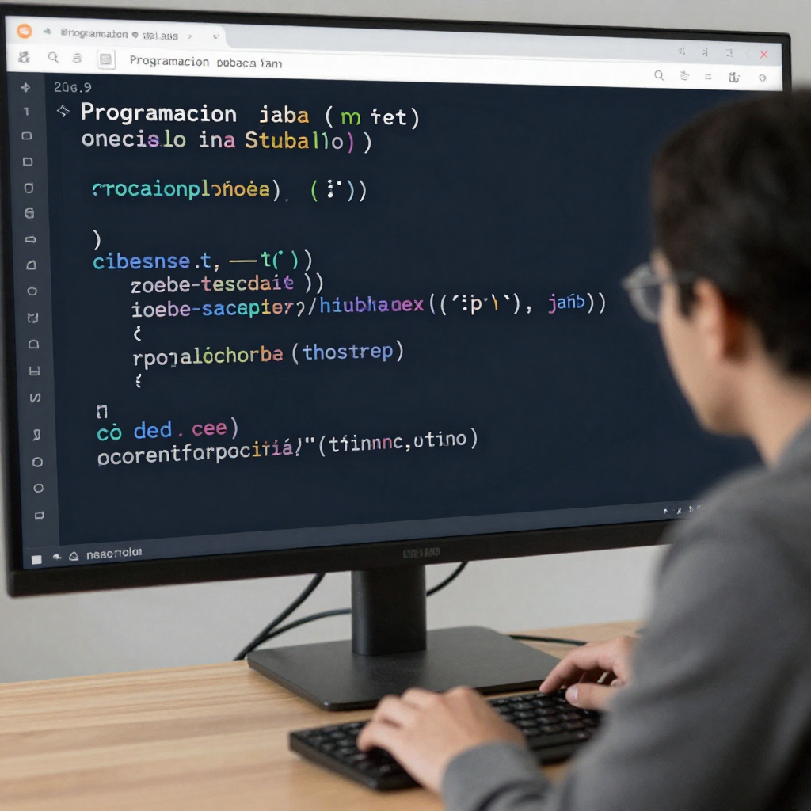

¿Qué es la programación?
La programación es la actividad de crear instrucciones para que una computadora realice tareas específicas, como mostrar información, resolver problemas o interactuar con el usuario. Estas instrucciones se escriben utilizando un lenguaje de programación, que es una forma especial de comunicación entre la persona y la computadora.
Para programar, no basta solo con conocer el lenguaje; también se utiliza un IDE (Entorno de Desarrollo Integrado), que es un programa que ayuda a escribir, organizar, ejecutar y corregir el código. El IDE facilita el trabajo del programador al mostrar errores, resaltar el código y permitir probar el programa fácilmente.
En conjunto, la programación consiste en usar un lenguaje de programación dentro de un IDE para crear programas de manera ordenada, lógica y eficiente. Gracias a este proceso se desarrollan páginas web, aplicaciones, videojuegos y muchos sistemas que usamos todos los días.

¿Qué es programar?
Programar es la práctica de construir un programa paso a paso, escribiendo código que transforma una idea en algo que funciona en la computadora. No se trata solo de escribir instrucciones, sino de tomar decisiones, probar resultados y corregir errores hasta que el programa cumpla su función.
Al programar, la persona trabaja directamente con el código dentro de un IDE, donde ejecuta el programa, revisa fallos y mejora su funcionamiento. Programar implica experimentar, equivocarse y ajustar, hasta lograr que la computadora responda correctamente.